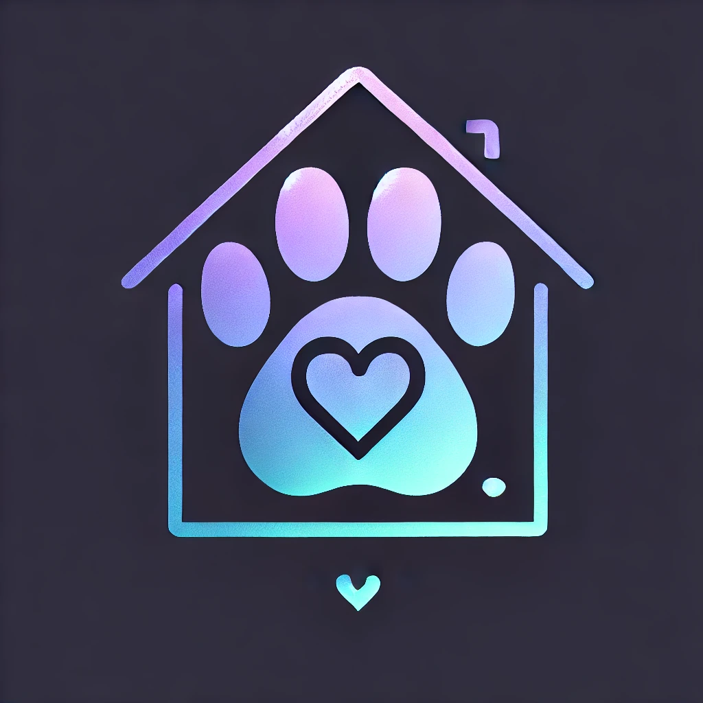
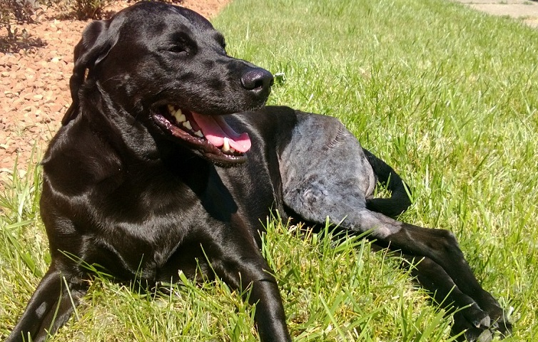
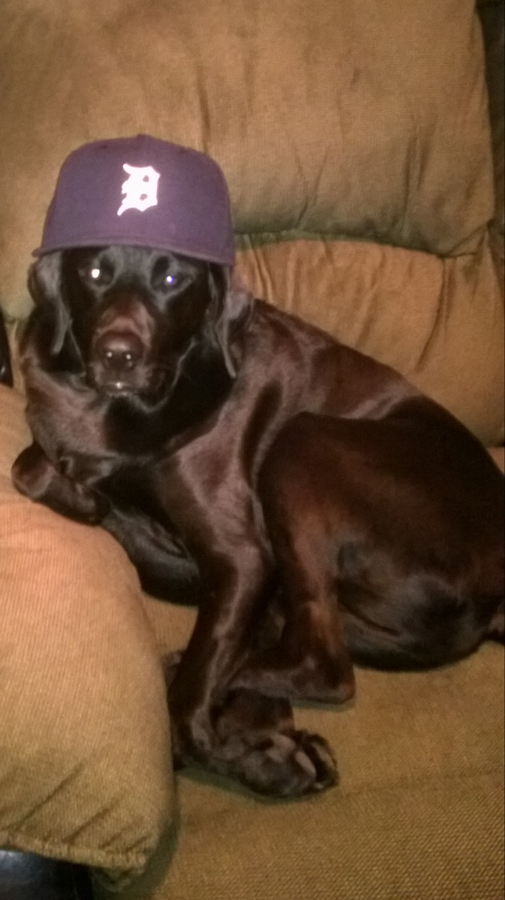

Discover how ShelterPawtners is transforming and incentivizing pet adoption and care through digital innovation, powerful partnerships, and the voices of everyday pet owners like you.
Most shelters today still rely on paper-based "report cards" to summarize an animal’s behavior, health, and personality — a system that is outdated, fragmented, and not easily transferable to new owners. ShelterPawtners is on a mission to digitize these documents, creating consistent, trackable, and transferrable pet profiles that live in the cloud and grow with each animal's journey.
We are creating certified digital report cards through the ShelterCARD program — a verified badge that proves a pet's shelter origin and ensures their story is never lost. These certified Pet Profiles are the backbone of our platform.
When a pet is adopted, their digital profile is seamlessly transferred to the new owner. No typing needed — just snap photos of vet invoices, medication bottles, or shelter records and our AI-powered system does the rest. It extracts structured data, updates their medical history, and provides you with actionable insights for follow-up care and savings opportunities.
Our platform makes it simple to maintain and build upon the shelter’s original profile, turning a basic report card into a living, intelligent medical record.
The moment you bring a pet home is just the beginning. From chronic skin conditions to allergies and behavioral issues, shelter pets often need extra support. But finding affordable care is hard — especially for families who adopted with limited budgets.
That’s why we’re building the first ever Post-Adoption Partner Network — a curated database of vets, trainers, groomers, food providers, and specialty services who want to support adopted pets with exclusive discounts.
Everything will be searchable by ZIP code and personalized to your pet’s specific needs — based on their profile data. No spam. Just useful, verified resources.
When enough pet profiles are created, we unlock something powerful: a true shelter pet network — fueled by data, shaped by compassion, and driven by our community of adopters and partners.
This network allows us to:
This is not just a platform — it’s a movement. One built on trust, transparency, and the shared belief that no healthy pet should be killed simply because it lacks a home or a voice.
This initiative was born from a real story — Shamus, a rescue dog who nearly died due to unaffordable medical costs. It was only through a network of volunteers and compassionate connections that he survived — and now thrives.
Shamus’s journey showed us what was missing: post-adoption support. ShelterPawtners exists to fill that gap with data, discounts, and digital tools that every adopted pet — and their human — can access freely.
 All it takes is a few minutes to create your free Pet Profile. Whether your pet was adopted yesterday or 10 years ago, their story still matters. The more we learn together, the more powerful this platform becomes.
There’s no cost, no app to download, and no catch. Just purpose-driven progress — powered by pet lovers like you.